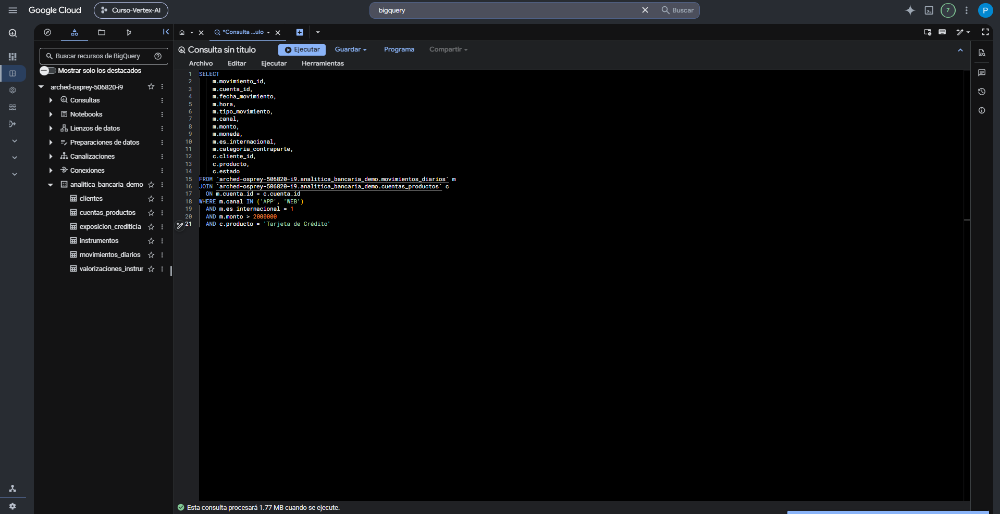
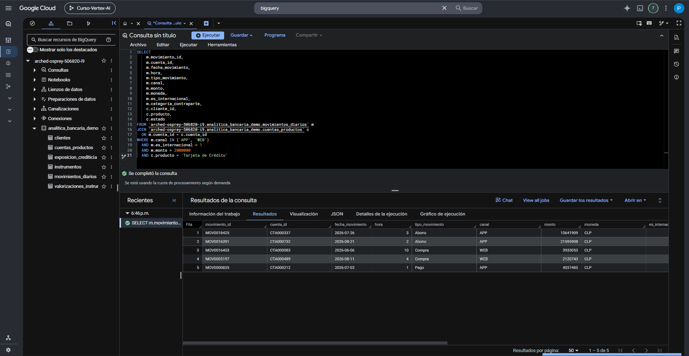

GoogleSQL — fundamentos
GoogleSQL es el dialecto de SQL utilizado por BigQuery. En esta etapa aprenderemos a leer y construir consultas sencillas: elegir columnas, indicar la tabla, filtrar registros, ordenar resultados y limitar cuántas filas se muestran.
1. ¿Qué es GoogleSQL?
Una consulta SQL expresa una pregunta sobre los datos. En BigQuery, GoogleSQL permite seleccionar, filtrar, transformar, agrupar y relacionar información sin modificar necesariamente las tablas originales.
2. Cómo leer una consulta
Conviene aprender a leer SQL como una frase lógica, no como una secuencia de palabras aisladas.
SELECT
cliente_id,
segmento,
region
FROM `arched-osprey-506820-i9.analitica_bancaria_demo.clientes`
WHERE nivel_riesgo = 'Alto'
ORDER BY fecha_alta DESC
LIMIT 10;Lectura natural:

3. SELECT y FROM
SELECT define qué columnas o expresiones aparecerán en el resultado. FROM indica desde qué tabla se obtienen los datos.
SELECT
cliente_id,
segmento,
region,
nivel_riesgo
FROM `arched-osprey-506820-i9.analitica_bancaria_demo.clientes`;SELECT
Determina las columnas que devuelve la consulta.
FROM
Determina la tabla o fuente desde la que se obtienen esas columnas.
4. WHERE: filtrar filas
WHERE conserva únicamente las filas cuya condición se evalúa como verdadera.
SELECT
cliente_id,
segmento,
region,
nivel_riesgo
FROM `arched-osprey-506820-i9.analitica_bancaria_demo.clientes`
WHERE nivel_riesgo = 'Alto';| Operador | Lectura |
|---|---|
| = | igual a |
| != | distinto de |
| > | mayor que |
| >= | mayor o igual que |
| < | menor que |
| <= | menor o igual que |

5. AND, OR e IN
Las condiciones pueden combinarse. La elección entre AND y OR cambia completamente qué filas cumplen el filtro.
AND: deben cumplirse ambas condiciones
SELECT cliente_id, segmento, region, nivel_riesgo
FROM `arched-osprey-506820-i9.analitica_bancaria_demo.clientes`
WHERE nivel_riesgo = 'Alto'
AND region = 'Metropolitana';OR: basta con que se cumpla una de las condiciones
SELECT cliente_id, segmento, nivel_riesgo
FROM `arched-osprey-506820-i9.analitica_bancaria_demo.clientes`
WHERE nivel_riesgo = 'Medio'
OR nivel_riesgo = 'Alto';IN: varios valores posibles de una misma columna
SELECT cliente_id, segmento, nivel_riesgo
FROM `arched-osprey-506820-i9.analitica_bancaria_demo.clientes`
WHERE nivel_riesgo IN ('Medio', 'Alto');6. ORDER BY: ordenar el resultado
ORDER BY define el criterio de ordenamiento del resultado. Si no se especifica, el orden de las filas no está garantizado.
SELECT
cliente_id,
segmento,
fecha_alta
FROM `arched-osprey-506820-i9.analitica_bancaria_demo.clientes`
ORDER BY fecha_alta DESC;ASC
Orden ascendente. Es el comportamiento predeterminado si no se especifica otra cosa.
DESC
Orden descendente, por ejemplo de una fecha más reciente a una más antigua.
7. LIMIT: limitar filas devueltas
LIMIT controla el número máximo de filas que produce la consulta.
SELECT
cliente_id,
segmento
FROM `arched-osprey-506820-i9.analitica_bancaria_demo.clientes`
LIMIT 10;8. Alias con AS
Un alias es un nombre temporal para una columna, expresión o tabla dentro de una consulta. Ayuda a que el resultado sea más legible y será especialmente útil cuando empecemos a trabajar con JOIN.
Alias de columna
SELECT
cliente_id,
fecha_alta AS fecha_ingreso
FROM `arched-osprey-506820-i9.analitica_bancaria_demo.clientes`
LIMIT 10;Alias de tabla
SELECT
c.cliente_id,
c.segmento
FROM `arched-osprey-506820-i9.analitica_bancaria_demo.clientes` AS c;9. Nombre completo de una tabla y backticks
En BigQuery es común utilizar el identificador completo:
PROYECTO.DATASET.TABLA
Ejemplo:
arched-osprey-506820-i9.analitica_bancaria_demo.clientes
En GoogleSQL, el nombre completo suele escribirse entre backticks:
SELECT
cliente_id,
segmento,
region,
fecha_alta,
nivel_riesgo,
canal_preferente
FROM `arched-osprey-506820-i9.analitica_bancaria_demo.clientes`
LIMIT 10;10. ¿Dónde aparece esto en la Prueba Tipo?
El agente tendrá que transformar un criterio documental en condiciones SQL. En la consulta final aparecerán varios de los conceptos de esta sección:
SELECT
Para devolver los campos necesarios para identificar y revisar cada operación.
FROM
Para indicar las tablas de BigQuery utilizadas.
WHERE
Para aplicar las condiciones documentales.
AND / IN
Para exigir condiciones simultáneas y permitir canales APP o WEB.
La secuencia didáctica mantiene el enfoque de la Clase 3: SELECT/FROM → WHERE → condiciones lógicas → ORDER BY → LIMIT → alias, aumentando complejidad solo cuando aparece una necesidad nueva.